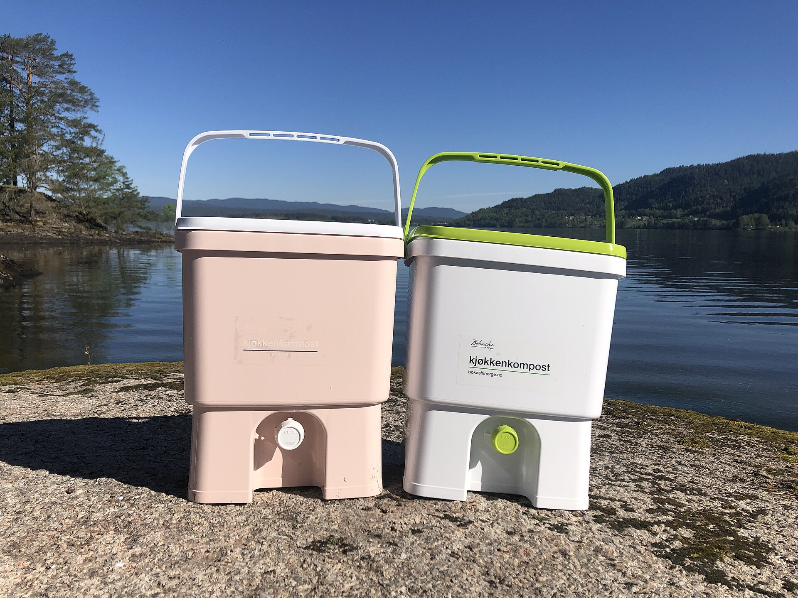

Bokashi Checklist
Ferment your scraps into garden gold.
What is Bokashi Composting?
Bokashi composting is a revolutionary anaerobic fermentation method that transforms the way you handle kitchen waste. Originating from Japan, the word "Bokashi" means "fermented organic matter." Unlike traditional aerobic composting that relies on oxygen and produces heat, Bokashi pickles your food scraps in a sealed, oxygen-free environment. This unique process preserves nutrients rather than releasing them as heat, yielding a pre-compost that is exceptionally rich in organic matter and beneficial microbes. Because the bucket is airtight, there is no need to turn the pile, monitor moisture levels, or worry about attracting pests — making it one of the cleanest and most convenient composting methods available.
The secret ingredient is EM-1 (Effective Microorganisms), a proprietary blend of lactic acid bacteria, yeasts, and phototrophic bacteria. These hungry microbes work in concert to ferment your food waste rapidly — typically within two to four weeks. EM-1 outcompetes putrefactive bacteria, the culprits behind rot and foul smells, ensuring your bucket stays fresh with a pleasant sweet-sour aroma reminiscent of pickles or fermented grains. This powerful microbial action is what makes Bokashi so versatile: it can process meat, dairy, cooked foods, bones, citrus, onions, and garlic — all the items that traditional compost piles and worm bins strictly forbid. Because fermentation, not decomposition, is the driving force, there are no pest-attracting odors, no fruit flies, and no need to worry about carbon-to-nitrogen ratios. The EM-1 microbes also produce enzymes, amino acids, and vitamins that enrich the final compost, giving your soil a potent boost of biological activity.
Once the fermentation cycle is complete, the resulting pre-compost can be buried in soil or added to an active compost pile, where it breaks down into nutrient-dense humus within a few weeks. This two-stage approach — fermentation followed by soil incorporation — gives you the speed and convenience of indoor composting with none of the downsides of traditional methods. Whether you live in an apartment or a house with a garden, Bokashi offers a practical, year-round solution for diverting every scrap of food waste from the landfill. Best of all, the fermented material acts as a powerful soil amendment, boosting microbial diversity and improving soil structure for healthier plant growth.
Why Choose Bokashi?
- No odors — The airtight bucket and fermentation process prevent rotting smells, producing only a mild, pickle-like scent.
- Handles all food waste — Meat, dairy, cooked foods, bones, citrus, onions, and garlic are all welcome; nothing goes to waste.
- Small space friendly — The compact bucket fits easily in a kitchen corner, balcony, or garage, making it ideal for apartments and urban homes.
A healthy bokashi bucket should smell sour and pickled, like silage or vinegar. A rotten egg odor means anaerobic bacteria took over:
- Too wet — Drain the liquid more frequently and add dry shredded paper or cardboard with your next scraps to absorb excess moisture.
- Lid not sealed tightly — Ensure the gasket is seated properly every time you close the bucket. Even a small air leak can introduce oxygen.
- Not enough EM-1 bran — Each layer of scraps must be covered with a generous sprinkle of the inoculant. Under-dosing is the most common cause of failure.
Liquid leachate is normal and valuable, but excessive dripping indicates a problem:
- Don't let liquid sit in the bottom — Drain the spigot every two to three days, or after adding scraps. Standing liquid creates pressure and accelerates leakage.
- Add absorbent material — Mix shredded newspaper or dry leaves into wet food scraps before layering them in the bucket.
- Check the spigot seal — If liquid drips when the spigot is closed, tighten it or replace the washer. A leaking spigot wastes valuable leachate.
White mold on bokashi is usually a good sign — it means the EM (Effective Microorganisms) are actively fermenting:
- White, fuzzy mold — This is the beneficial EM-1 colony working correctly. Leave it alone and continue adding layers.
- Green, black, or yellow mold — These colors indicate unwanted aerobic bacteria. Your bucket was exposed to air too long. Drain liquid, add more EM-1 bran, and seal tightly.